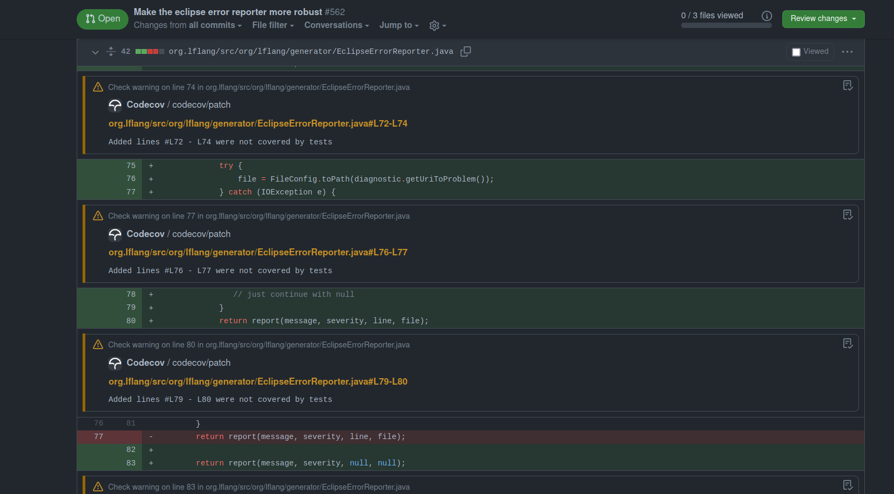
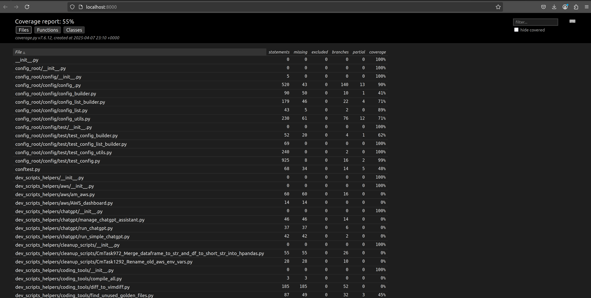
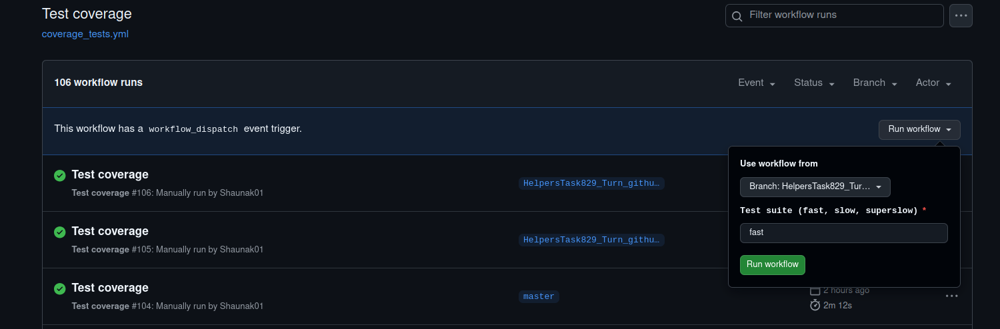
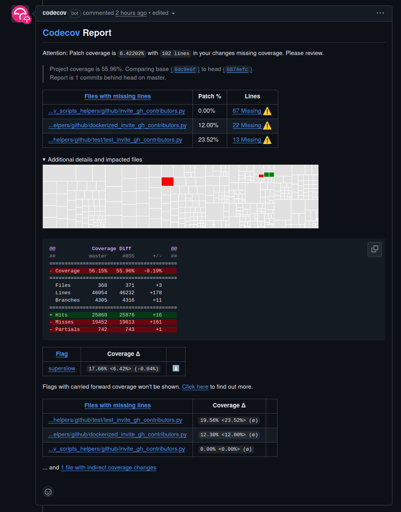
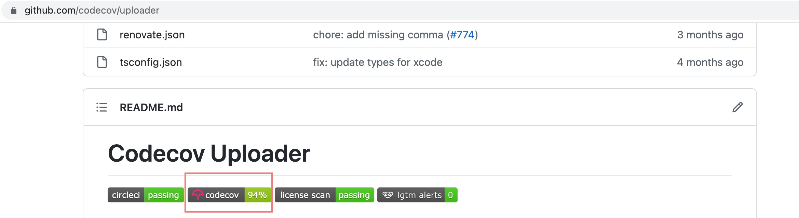
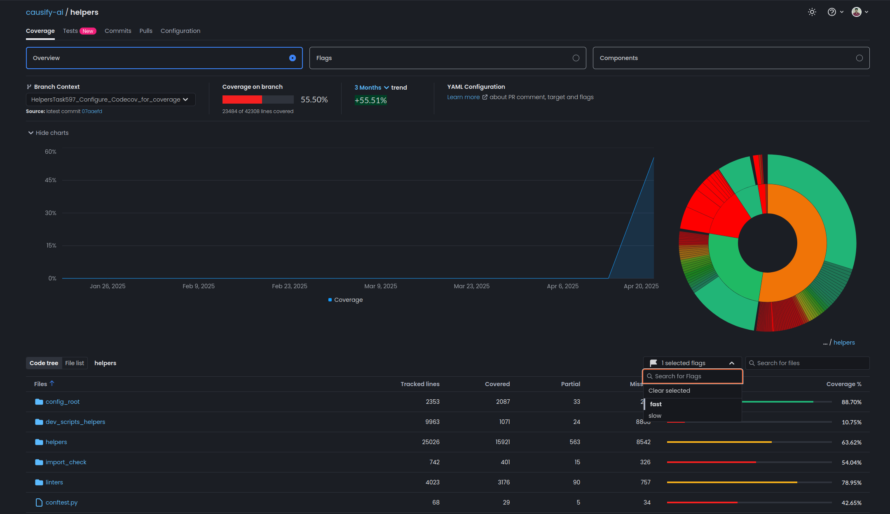

All.codecov.how to guide
Codecov Integration and Coverage Setup Documentation#
This documentation describes the setup and usage of Codecov integration for our repos. The purpose is to explain how Codecov coverage tracking is configured, the functionalities implemented, and how developers can interpret, interact with, and extend the coverage results.
Setting Up Codecov#
Codecov was integrated by adding necessary files and configuration steps:
Files and Directories Added
- .coveragerc: Configures directories and files under coverage collection
- /.github/gh_requirements.txt: Lists dependencies necessary for the coverage workflow
- /.github/workflows/coverage_tests.yml: Defines GitHub Actions workflow for automated coverage runs
External setup
Applies default coverage settings across all repos to ensure consistency in
reporting and behavior. If needed, individual repos can include their own
.codecov.yml at the root to override specific global settings.
- Global YAML: Configures coverage collection of Codecov
Coverage Configuration#
The .coveragerc file defines coverage measurement settings:
Excluded Files: These files are omitted from coverage reporting.[report] omit = */devops/compose/* */helpers/test/outcomes/*/tmp.scratch/*
GitHub Actions Workflow#
Coverage tests are automated via GitHub Actions -
.github/workflows/coverage_tests.yml.
Workflow Schedule#
- Runs daily at midnight (UTC)
- Can be manually triggered (
workflow_dispatch) - Action fails if coverage drops by
1%(includingfast,slowandsuperslowtests)
Workflow Jobs#
-
Fast Tests Coverage:
-
Runs daily or on manual trigger
-
Uploads report flagged as
fast -
Slow Tests Coverage:
-
Runs daily or on manual trigger
-
Uploads report flagged as
slow -
Superslow Tests Coverage:
-
Runs weekly on Monday or on manual trigger.
-
Uploads report flagged as
superslow. -
Each job:
-
Generates an
XMLcoverage report (Global YAML) - Uploads reports to
Codecovwith respective flags (fast,slow,superslow)
Codecov Configuration#
- Coverage flags and project-level checks are configured at Global yml - https://app.codecov.io/account/gh/causify-ai/yaml/.
-
If required, you can add distinct repository configurations to the
.codecov.ymlfile at the root of your repository. - You can change the threshold of coverage drops for a specific repo - You can add/ change patch settings or flags for a specific repo -
Flag Management
The carryforward option allows Codecov to reuse the previous coverage data
if a report is not submitted for a given flag in the current CI run. This is
useful when certain test suites (e.g., slow or superslow) don't run in every
cycle but should still be reflected in the coverage summary.
flag_management:
individual_flags:
- name: fast
carryforward: true
- name: slow
carryforward: true
- name: superslow
carryforward: true
- Comment Behavior
Codecov can automatically post a summary comment on PRs. This comment can be
customized in layout, behavior, and verbosity.
- layout: "reach, diff, files" : Displays overall coverage, diff coverage,
and file-level detail
- behavior: default : Overwrites the previous comment instead of posting a
new one
- require_changes: false : Posts the comment even when coverage doesn't
change
- show_critical_paths: false : Disables per-line comments in the PR diff
view
comment:
layout: "reach, diff, files"
behavior: default
require_changes: false
show_critical_paths: false
<img src="figs/coverage/image1.png" alt="alt text" width="1000"/>
-
When per-line comments in PR files is enabled:

-
GitHub Check Annotations
Inline annotations in the GitHub Files changed view are disabled using the
github_checks.annotations flag. This ensures a cleaner PR experience
without coverage-based highlights on each line.
<img src="figs/coverage/image7.png" alt="alt text" width="1000"/>
- Coverage Status Check:
This section configures the status checks that appear in GitHub pull
requests. It defines both patch-level and project-level coverage checks and
sets conditions for when they should run and how they should behave.
- project.default: Defines the overall coverage check behavior.
- target: auto automatically compares against the base branch of the PR.
- threshold: 1% means the check will fail if coverage drops by 1% or
more.
- flags scopes the project-level check to specific test suites (fast,
slow, superslow).
- branches limits the check to PRs targeting the master branch.
- patch: true: Ensures Codecov always checks coverage on the changed lines
in a PR, regardless of the base branch or flag.
coverage:
status:
project:
default:
target: auto
threshold: 1%
flags:
- fast
- slow
- superslow
branches:
- master
patch: true
<img src="figs/coverage/image3.png" alt="alt text" width="1000"/>
Viewing Coverage Reports#
Coverage results for the helpers repository are accessible via Codecov.
- Codecov UI link for helpers - https://app.codecov.io/gh/causify-ai/helpers
- Master Build Dashboard Notebook: http://172.30.2.44/build/buildmeister_dashboard/Master_buildmeister_dashboard.latest.html#Code-coverage-HTML-page
Running Coverage Locally#
Developers can manually run coverage tasks locally via Invoke commands and generate html report:
-
Fast Tests:
invoke run_coverage --suite fast --generate-html-report -
Slow Tests:
invoke run_coverage --suite slow --generate-html-report -
Superslow Tests:
invoke run_coverage --suite superslow --generate-html-report -
Review HTML coverage report
- Run a local HTTP server to serve the HTML:
cd htmlcov python3 -m http.server 8000 - If you're running this on a remote server, set up SSH port forwarding:
ssh -i ~/.ssh/<private_key> -L 8000:localhost:8000 <user_name>@<server_ip> -
Then open your browser and go to: http://localhost:8000

- Run a local HTTP server to serve the HTML:
Running Targeted Coverage Suites for a Single PR (Manual Triggering)#
The primary reason for doing this is to measure the coverage impact of the
changes introduced in a specific pull request, including newly added or modified
files. This helps determine whether the PR maintains, increases, or decreases
test coverage in the areas it touches. This section explains how to trigger an
isolated test suite (e.g., fast,slow,superslow) for a specific PR and
ensure that Codecov coverage reflects the results correctly.
Logic Behind the Workflow#
- A GitHub Actions workflow can be triggered manually via the
workflow_dispatchevent - The input field
suite(fast,slow, orsuperslow) determines which test group runs - To attribute the results to the PR, the test suite must run on a branch that
is part of the PR history (not
masteror a detached manual run) - When the upload is done from a commit not associated with the PR, Codecov will not link the results to the correct diff
Steps to Trigger Manual PR-Specific Coverage#
This approach ensures that the Codecov flag is uploaded against your PR commit, so the coverage diff is accurate.
- Open the Actions tab of the repository
- Select the Test coverage workflow (or its current name)
- Select the branch name where the PR is open
- In the suite input box, enter the test you want to run:
- Fast
- Slow
- Superslow
-
Click Run workflow to start the job.

-
Monitor the run
-
The workflow executes only on the selected test.
-
On success, it uploads the coverage report to Codecov with the test flag.
-
Verify the updated flag in Codecov
-
Return to the pull-request page on GitHub.
-
There should be a comment from the codecov bot with the PR coverage details

System Behavior: When the Test Coverage Workflow Fails or Continues#
This section documents how the Test coverage workflow behaves under various failure conditions, specifically regarding the fast, slow, and superslow test suites.
- Dependency / Setup Steps
Steps included:
- AWS credential configuration
- Docker login
- Cleanup
- Code checkout
- PYTHONPATH update
- Dependency installation
Behavior:
- If any of these steps fail, the workflow fails immediately
- No test suites (fast, slow, superslow) will run
-
This is intentional to prevent test execution in a broken or incomplete environment
-
Fast / Slow Test Steps
Steps included:
run_fastupload_fastrun_slowupload_slow
These steps use continue-on-error: true.
Behavior:
- If any of these steps fail, the workflow continues without immediate failure
- The superslow test will still run if the workflow is triggered on Monday (scheduled) or manually (workflow_dispatch)
-
However, the workflow may still fail at the end if fast/slow failures are detected by the final failure check step
-
Superslow Test Steps
Steps included:
run_superslowupload_superslow
These steps do not use continue-on-error.
Behavior:
- These steps run only:
- On scheduled workflows that fall on a Monday (DAY_OF_WEEK == 1)
- Or when the workflow is manually triggered
- If either step fails, the workflow fails immediately
-
If both pass, the workflow continues to the final fast/slow check
-
Final Failure Check (Fast/Slow Only)
Step included:
- Fail if fast/slow test or upload failed
Behavior:
- This step runs at the very end of the workflow
- It checks whether any of the fast/slow test or upload steps failed
- If any of them failed, this step causes the entire job to fail using exit 1
- This ensures that silent failures in fast/slow coverage are surfaced, even if superslow passes
| Step Type | Step Failed? | Superslow Runs? | Job Fails? |
|---|---|---|---|
| Setup Step | Yes | No | Yes |
| Fast Test | Yes | Yes (Mon/dispatch only) | Yes (after final check) |
| Slow Test | Yes | Yes (Mon/dispatch only) | Yes (after final check) |
| Superslow Test | Yes | n/a | Yes |
| Final Fail Check | Yes (if fast/slow failed) | Already ran | Yes |
Additional Functionalities and Extensions#
Additional functionalities provided by Codecov that can be utilized or extended include:
Pull Request Comments: Automatically generate detailed coverage summaries or line-by-line coverage comments directly in GitHub pull requests-
Coverage Badges: Integrate coverage badges in the repositoryREADMEto visibly show current coverage status
-
Report Customization: Configure detailed reporting settings to specify what information to display or omit in coverage summaries
Coverage Behavior and Best Practices#
- Coverage reports are uploaded regardless of test success to ensure coverage tracking consistency
-
Coverage flags (
fast,slow,superslow) allow separate visibility and tracking- Fast test coverage:

-
Regular review of coverage differences (visible in PR checks and Codecov UI) is encouraged to maintain code quality
Troubleshooting#
- Check GitHub Actions logs for errors in coverage upload steps
- Ensure
CODECOV_TOKENis correctly set as a GitHub secret - Validate workflow and coverage configuration files for correctness if issues arise